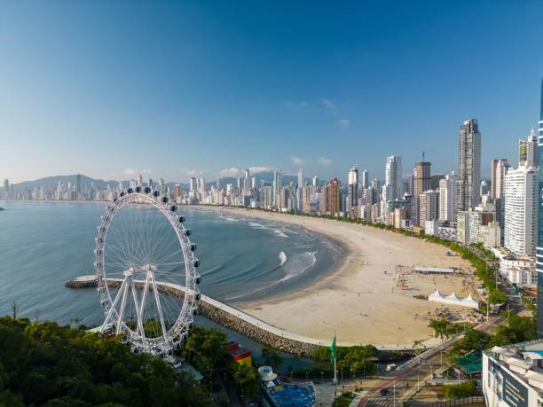

Santa Catarina é um estado localizado na região Sul do Brasil, conhecido por suas belas praias, serras e florestas. Sua economia é diversificada, destacando-se na indústria, agricultura e produção de móveis. O estado possui uma cultura rica, influenciada por comunidades alemãs, italianas e portuguesas, refletida na culinária, festas tradicionais e arquitetura. Além disso, é um destino turístico popular, oferecendo atividades ao ar livre e paisagens deslumbrantes.
